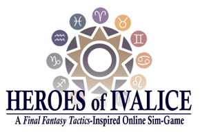

Quote
A warrior takes sword in hand,
clasping a gem to his heart.
Engraving vanishing memories
into the sword,
He places finely honed skills
into the stone.
Spoken from the sword,
handed down from the stone...
Now the story can be told...
Heroes of Ivalice presents:
"The Orphan Soul Story"
I am Sydney, a scholar of history
Have you ever heard of the Lucavi War?
It brought suffering to Ivalice and Ordalia
for centuries and cost innumerable lives.
Chaos ruled in the world, and ordinary
men and women rose up from obscurity
to accomplish what seemed impossible.
Everybody living here knows
the story of how this came to be;
how the Cult of Isiiri summoned Lucavi
and plunged the world into darkness.
Everybody living here knows
the stories of the ancient heroes like
Saint Victor and Ramza Beoulve.
But, there are heroes living in the world
today, long since returned to obscurity.
Wont you listen while I
tell these heroes stories?
Welcome to Ivalice or, should I say, Hell.
The year is 312 AL, and there is nothing left of the great empires that once dominated the land but ashes. The Geralis Dynasty that once led Ivalice against the overwhelming darkness has been snuffed out, leaving the land in disordered chaos and making humanity that much more vulnerable to the claws of the Lucavi. The mighty Ordalian Trade Company has forced the dissolution of the Ordalian monarchy in the interests of profit, while the Ordalian people die like dogs at the hands of their diabolical oppressors. The demons rampage through many regions of the world unimpeded and unstoppable, while meager settlements of humans scattered across Ivalice and Ordalia struggle every day to go about their business in the shadow of the Fallen Angel and his allies.
While the situation is dire, all is not lost. On the futures horizon, a timorous sun peeks through the three-century night that has fallen over Ivalice and Ordalia, shedding pale, unsteady beams of light on the world. The Victorian Church, the dominant faith of Ivalice, has rallied to itself a host of warriors known as the Shrine Knights, guardians of the light whose stalwart faith and valorous exploits keep hope alive in the hearts of mankind. The ancient order of guerilla fighters owing allegiance to the Beoulve family, Orphan Soul, makes war on the demons in their home province of Limberry. Across the land, ordinary people make their stands against the stagnant darkness and strive to rebuild their homes and their lives. A new generation of heroes and villains is rising, and the fate of the world hangs in the balance.
Come right in the Lucavi are waiting
http://www.heroesofivalice.com